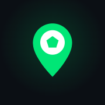
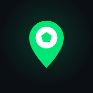
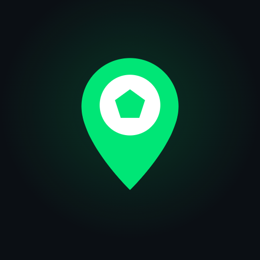
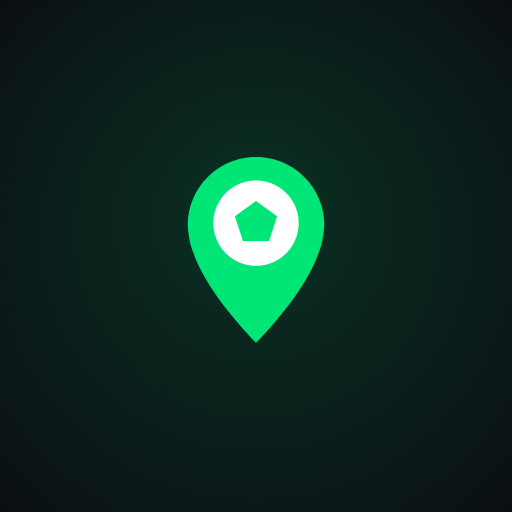

Íconos exportados del logo oficial en PNG sin pérdida, splash de marca y el manifest listo para producción. Todo en la carpeta /pwa.




<!-- Manifest y tema --> <link rel="manifest" href="/pwa/manifest.webmanifest"> <meta name="theme-color" content="#0b0f14"> <!-- iOS: ícono e inicio en pantalla completa --> <link rel="apple-touch-icon" href="/pwa/icon-180.png"> <meta name="apple-mobile-web-app-capable" content="yes"> <meta name="apple-mobile-web-app-status-bar-style" content="black-translucent"> <meta name="apple-mobile-web-app-title" content="FutGO">